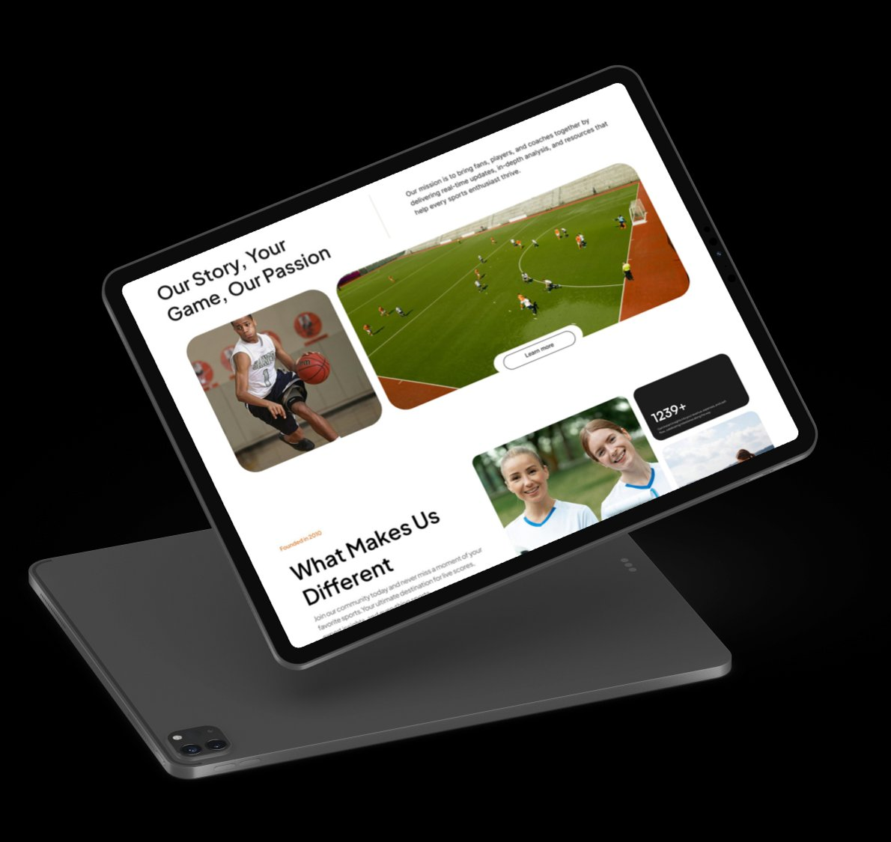
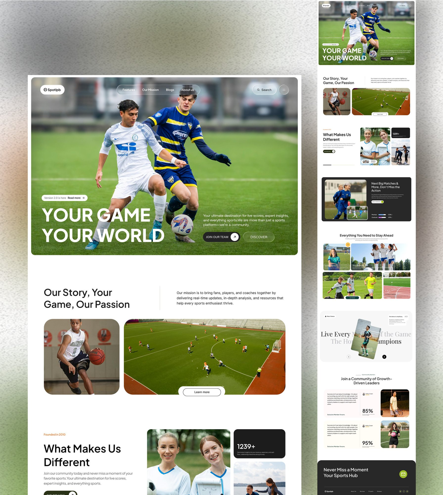

Full landing page redesign for a sports community platform connecting fans, players, and coaches. From fragmented fan experiences to a unified, conversion-optimized experience that increased sign-ups by 42%.
Sports fans, amateur players, and coaches looking for a community beyond just scores
A landing page that communicates Sportipb's unique value and converts visitors to members
After competitor analysis showed no platform combining community features with live data
Web, responsive across desktop, tablet, and mobile (73% mobile traffic)
68% bounce rate and 2.1% conversion. Users could not understand the value prop in under 5 seconds
Research-driven redesign with A/B tested CTAs, trust signals, and progressive disclosure
I audited 6 months of analytics data, conducted 8 user interviews, benchmarked 6 competitors, and facilitated a stakeholder alignment workshop.
Users leaving within 8 seconds on average. No clear value proposition in the hero section.
Interview participants failed to identify the value proposition from the hero section alone.
Testimonials, user counts, and partner logos were cited as sign-up motivators by nearly all participants.
Yet mobile conversion was 0.8% vs 3.4% desktop. The mobile experience was an afterthought.
"I follow 3 leagues across 2 time zones. I need everything in one place."
"I play Sunday league and coach U-12s. I want to connect with local players."
"I need one platform for team management, not three separate apps."
The redesigned landing page leads with an action-oriented hero, builds trust through community stats and social proof, and converts through community-framed CTAs. "Join Our Team" outperformed "Sign Up Free" by 59% in A/B testing.


"Join Our Team" beat "Sign Up Free" by 59% in A/B testing. Users are motivated by belonging, not features.
On devices under 375px, the primary CTA was hidden. Fixed with a persistent sticky CTA bar on mobile.
Guerrilla wireframe tests cost nothing but saved weeks. Validating the hero layout before any high-fidelity work was the single biggest time-saver.
With 73% mobile traffic, I should have started wireframes on mobile. Adapting desktop layouts down always creates compromise. Start small, scale up.